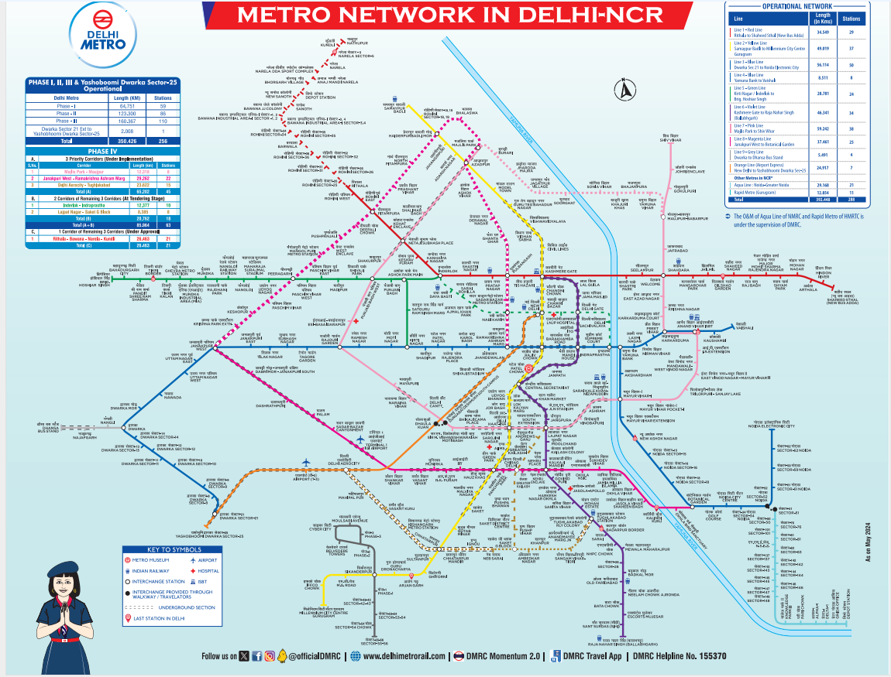

"DELHI METRO RAIL CORPORATION LTD."

Click here to: View Map
The Delhi Metro route map is an essential tool for navigating the extensive and intricate network of the Delhi Metro Rail Corporation (DMRC). This map, designed to be user-friendly, provides a comprehensive overview of the 11 color-coded lines that span over 390 kilometers and connect 285 stations across the National Capital Region (NCR).
The Delhi Metro route map is available in both digital and physical formats. Commuters can access interactive maps via the DMRC’s official website and mobile application, which offer real-time updates, route planning features, and fare calculators. Physical maps are prominently displayed at all stations and inside trains, ensuring accessibility to all passengers.
In summary, the Delhi Metro route map is an indispensable resource for navigating one of the world’s most expansive metro networks. It combines clarity, detailed information, and ease of use, making it an essential companion for daily commuters and tourists alike.
Key Features of the Delhi Metro Route Map
- Color-Coded Lines: Each line on the map is distinctly colored, making it easy to identify and differentiate between routes. For example, the Red Line runs from Rithala to Shaheed Sthal, the Yellow Line from Samaypur Badli to HUDA City Centre, and the Blue Line from Dwarka Sector 21 to Noida Electronic City/Vaishali.
- Interchange Stations: The map highlights major interchange stations where passengers can switch between lines. Key interchanges include Rajiv Chowk (Blue and Yellow Lines), Kashmere Gate (Red, Yellow, and Violet Lines), and Hauz Khas (Yellow and Magenta Lines). These nodes are crucial for planning multi-line journeys.
- Landmark Integration: Significant landmarks, commercial hubs, and residential areas are marked on the map, aiding commuters in identifying nearby stations for their destinations. Stations like Chandni Chowk, Connaught Place, and Qutub Minar are notable examples.
- Feeder Services: The map often indicates the availability of feeder bus services and rickshaw stands at major stations, providing last-mile connectivity. This integration ensures seamless travel from the metro to the commuter’s final destination.
- Extensions and New Lines: The map is regularly updated to include new lines and extensions. Recent additions like the Pink Line and the Magenta Line enhance connectivity, linking remote areas and reducing travel times significantly.
- Accessibility Features: Icons and legends denote stations equipped with facilities for differently-abled individuals, such as elevators, escalators, and tactile paths. This ensures that all commuters can plan their journeys with ease.
- Operating Hours and Frequency: While not always depicted directly on the map, accompanying materials often provide information on train operating hours and frequency, helping commuters plan their trips effectively.